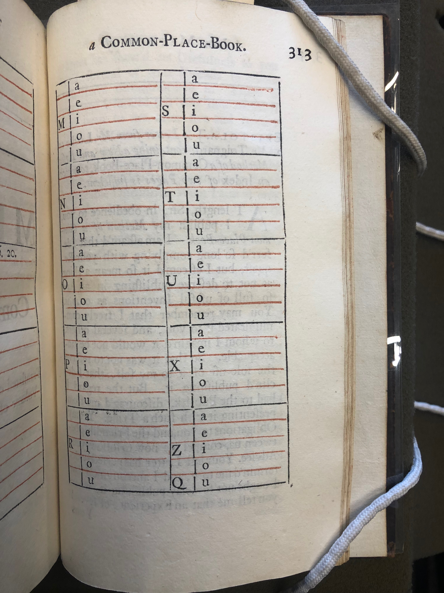

The maxims, quotations, and references in Richardon's Sentiments are divided by novel (Pamela, Clarissa, and Sir Charles Grandison), after which they have been organized by alphabetized subject. The sentiments under each heading are ordered by the volume and page number of their place in the novel, rather than importance.
Progressing through the book from the Pamela section to the Grandison section, each novel section increases in both number of subject headings and number of sentiments in each subject. The Pamela section contains 123 subjects over 83 pages, with each subject section averaging about 0.7 pages. The Clarissa section contains 134 subjects over 132 pages, with an average of 1 page per subject, and the Grandison section contains 142 topics over 179 pages, with an average of 1.3 pages per subject.
Like the project more generally, Richardson's alphabetized schema borrows from a history of commonplace books, which became especially popular outside of academic institutions during the eighteenth century, perhaps in part due to John Locke's publication of A New Method of a Common-Place-Book in 1706 (see image of schema from Locke's guide below). Moral Sentiments was clearly influenced by this new form of commonplacing outside of the classroom. Whereas earlier Renaissance commonplacing practices often replicated a few standardized headings, for example, Locke advocated for the reader to create original, personalized headings based on the content of their reading and their own interests. Locke even provided his readers with an example layout (seen below) exhibiting how they should alphaebtize their commonplace book and its index: first by the first letter of the word, and secondly by the first vowel.
Method of a Common-Place-Book<" style="width:50%;height:auto;">Following Locke's guidelines, Richardson individualizes the subject headings for each novel. Some subjects are found across each novel section: Pamela, Clarissa, and Grandison each have a section on “Anger", “Beauty”, “Courtship”, “Education”, “Lawyers”, “Libertines”, “Love”, and “Wit”, among others. Yet there are also many specific subject headings that are found only within a single novel section: Sir Charles Grandison has sections on “Clandestine Marriages”, “Hospital(s) for Female Penitents”, and “Wedding-Day(s)”; Clarissa has sections on “Blushing”, “Eyes”, and “Rapes”; and Pamela has sections on “Children in their early infancy”, “Low Life”, and specifically on the “Poor not to be despised by the Rich”. These subject headings illustrate that Richardson is following the Lockean notion of commonplacing: beginning with the novel and its knowledge, and only subsequently classifying that knowledge into topics of note.
{Return to Tour Table of Contents}